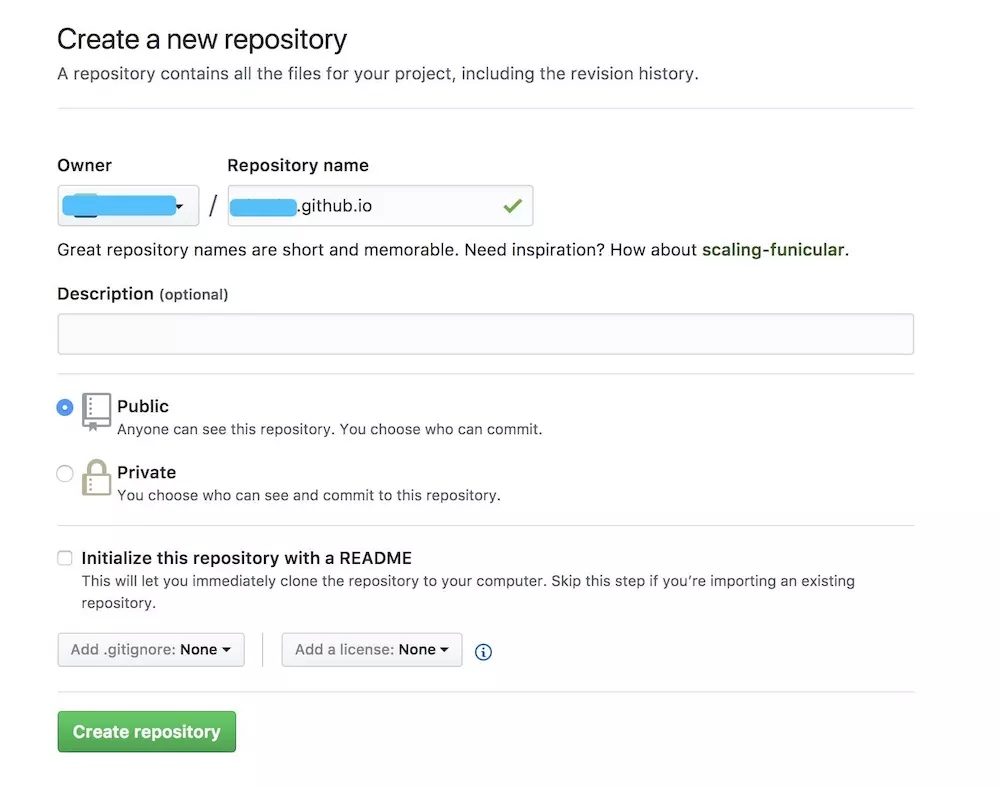
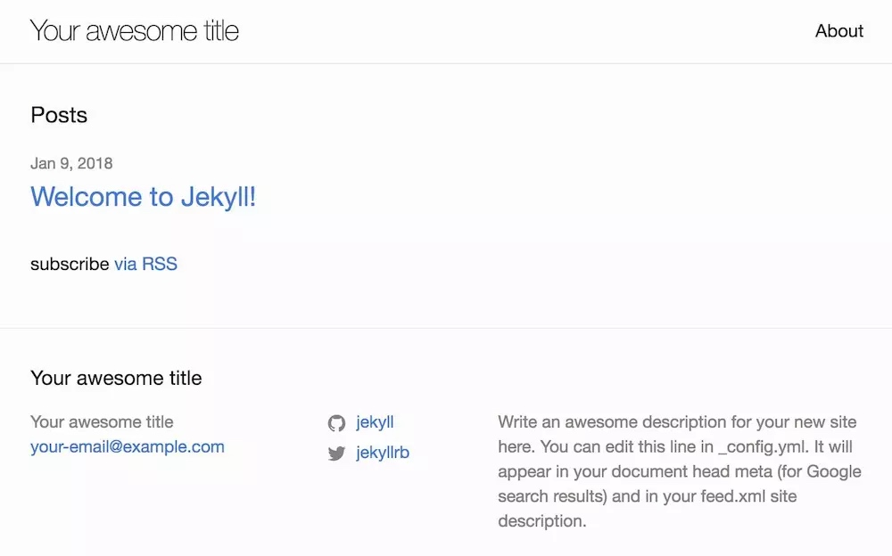

记录GitHub Page搭建过程
Github Pages
前往GitHub并且创建一个新的repository，命名规则是：username.github.io（username是Github用户名，蓝色线部分相同）

blog-github-create
clone项目到本地
git clone https://github.com/username/username.github.io
制作Hello World 页面
cd username.github.io
echo "Hello World" > index.html
提交到GitHub，需要配置SSH免密码登录
git add --all
git commit -m "Initial commit"
git push -u origin master
访问：https://username（GitHub用户名）.github.io ，可以看见个人主页。
Jekyll
Jekyll是一个简单的免费的Blog生成工具，类似WordPress。但是和WordPress又有很大的不同，原因是jekyll只是一个生成静态网页的工具，不需要数据库支持。但是可以配合第三方服务,例如Disqus。最关键的是jekyll可以免费部署在Github上，而且可以绑定自己的域名。
安装过程
1.安装Ruby
Mac有默认的Ruby环境，根据如下命令确认是否正常工作及版本
ruby -v
2.安装Jekyll
sudo gem install jekyll bundler
3.使用模板安装直接进入下一节，如果不使用模板，可以进行如下方法安装
jekyll new my-awesome-site
cd my-awesome-site
cp -R * path/username.github.io/
注：path/username.github.io 为GitHub本地目录
4.开启Jekyll环境
在path/username.github.io目录下，执行
bundle exec jekyll serve
5.本地调试
通过http://localhost:4000 ，访问页面。

blog-jekyll-new
Jekyll 模板
替换Jekyll模板，根据知乎黄玄回答找到startbootstrap-clean-blog-jekyll模板BlackrockDigital，其他模板根据说明进行安装。
效果页面可以访问： Clean Blog

blog-github-clean-blog
安装过程
安装过程可以使用两种方式。
- 命令方式：详见startbootstrap-clean-blog-jekyll的GitHub页面
- 覆盖方式：本文采用方式，详细说明如下
下载或者Clone项目startbootstrap-clean-blog-jekyll到本地，覆盖到GitHub.io的本地工程。
修改 _config.yml 文件，下述为需要修改部分，其他保持不变即可。
| 参数 | 说明 |
|---|---|
| title | 名称 |
| 通讯方式 | |
| description | 描述 |
| github_username | GitHub用户名 |
| baserul | 二级路径，可以为'' |
| url | GitHub.io的URL路径 |
用过命令
bundle exec jekyll serve
启动本地环境，通过 http://localhost:4000 访问页面。变动提交到GitHub后，可以在 https://username（GitHub用户名）.github.io 看到修改变化。
创建文档
在_post文件下，新建md文件，文件书写格式如下
---
layout: post
title: "标题"
subtitle: "副标题"
date: 2018-01-08 00:00:01
background: '/img/posts/01.jpg'
---
jekyll可以自动检测并识别文档，并添加到博客首页中。
域名
GitHub部分配置
在GitHub工程根目录添加CNAME文件，如下图所示。域名部分仅为域名名称，不添加http等关键字。

blog-github-cname
域名提供商部分
本文使用的是阿里云提供的云解析DNS，添加记录如下图所示。

blog-aliyun-cname
记录A部分，添加IP地址：192.30.252.153和192.30.252.154。（IP地址为GitHub提供，详见setting-up-an-apex-domain）
记录CNAME部分，添加username（GitHub用户名）.github.io，主机记录为www。
10分钟后访问域名，查看是否生效。
七牛云
Jekyll的图片可以使用相对路径，图片放在img文件夹下，在markdown文本中，通过如下方式显示图片。

同样可以使用七牛云存储，存放图片，个人博客的访问量一般在免费额度范围内。结合图床工具，可以方便的把本地图片上传到七牛云中。
申请账号后，在个人中心-密钥管理中，查看Access Key和Secret Key

blog-qiniu-new
申请存储空间，本文存储空间为mweb（即为BucketName），申请成功后管理界面如下：

blog-qiniu-bucket
区域分华东、华北、华南和北美，需要记录，后续使用。
测试域名需要记录，如果配置了CDN加速可以使用正式域名。
MWeb
MWeb是一款Markdown笔记工具，主页：http://zh.mweb.im 。如果使用其他Markdown工具，可以使用极简图床或者类似工具上传图片。
在MWeb-Preferences-Publishing中配置七牛插件，把本地文件上传到七牛中。

blog-qiniu-mweb
填写说明如下：
| 填写项 | 填写内容 |
|---|---|
| Name | 个人喜好填写 |
| API URL | 本文以华北为例，其他参看备注 |
| Bucket Name | 存储空间名称 |
| Access Key | 上一小节提到 |
| Secret Key | 上一小节提到 |
| Image URL Prefix | 测试域名或者正式域名地址 |
| Image URL Suffix | 可以不填写 |
注： 存储区域上传域名
配置成功后，通过工具栏按钮选取本地文件，生成Markdown图片标签的同时上传到七牛云。